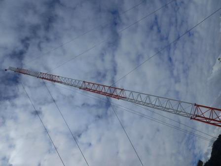

UNIVERSIDAD TÉCNICA PARTICULAR DE LOJA TECNOLOGÍAS WEB
Trabajo en una empresa en el Oriente ecuatoriano, en la parte de Tecnologías de Información, nuestro trabajo incluye proyectos
de implementación de tecnología e infraestructura dentro de la empresa, en la foto vemos como se instaló una nueva torre de comunicaciones
que servirá para enlazar una de nuestras oficinas.

Incluyo este video de inicios de año, en el se ve el festejo del año nuevo chino en la empresa donde trabajo, es interesante ver
que en la diversidad se pueden desarrollar de manera muy positiva los proyectos que benefician al país.
En este evento particié en un coro cantando en idioma chino, todo un reto.